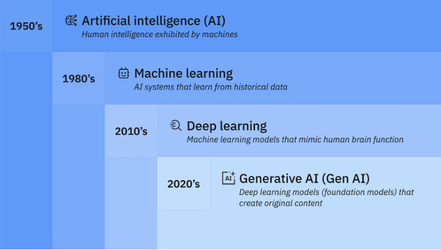

A Transformação no Mercado de Trabalho
A Inteligência Artificial não está necessariamente substituindo os programadores, mas sim redefinindo como o software é construído. Tarefas repetitivas estão sendo automatizadas, permitindo que os desenvolvedores foquem em arquitetura e resolução de problemas complexos.
Habilidades em Alta na Era da IA
- Engenharia de Prompt (Saber pedir à IA)
- Revisão de Código e Segurança
- Integração de APIs de IA (OpenAI, Gemini, etc.)
Tabela: Desenvolvimento Antes vs. Depois da IA
| Atividade | Antes da IA | Com IA Integrada |
|---|---|---|
| Geração de Boilerplate | Feita manualmente ou com snippets estáticos. | Gerada instantaneamente com prompts. |
| Busca por Erros (Debugging) | Leitura de logs longos e fóruns como StackOverflow. | A IA analisa o log e sugere a correção direto na IDE. |
| Criação de Testes | Escritos um a um pelo desenvolvedor. | Esboços gerados automaticamente pela IA. |
| Fonte: Análise de tendências do mercado de tecnologia em 2026. | ||
Sobre: Inteligência Artificial
